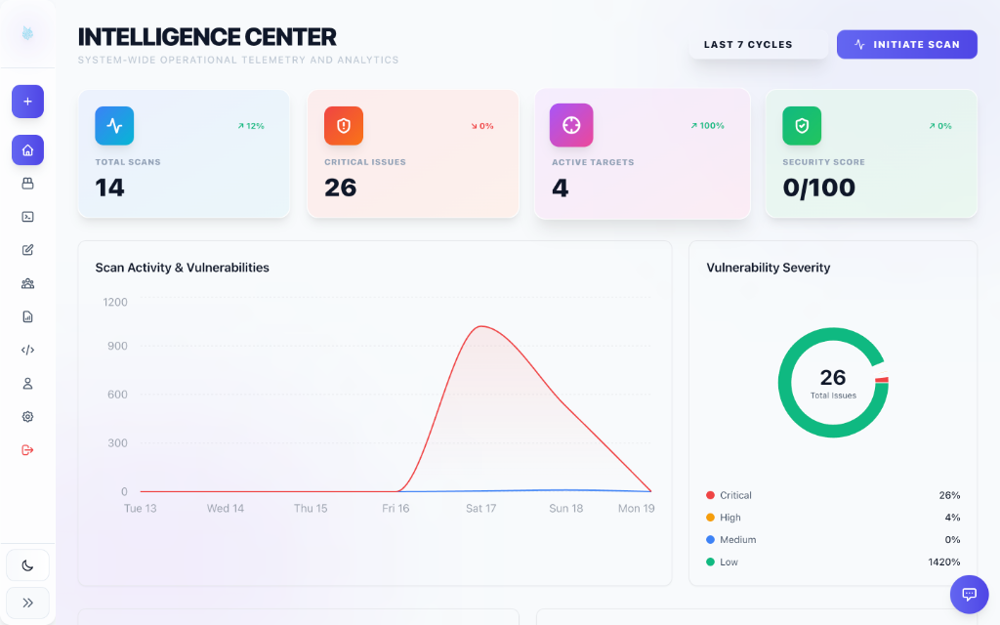
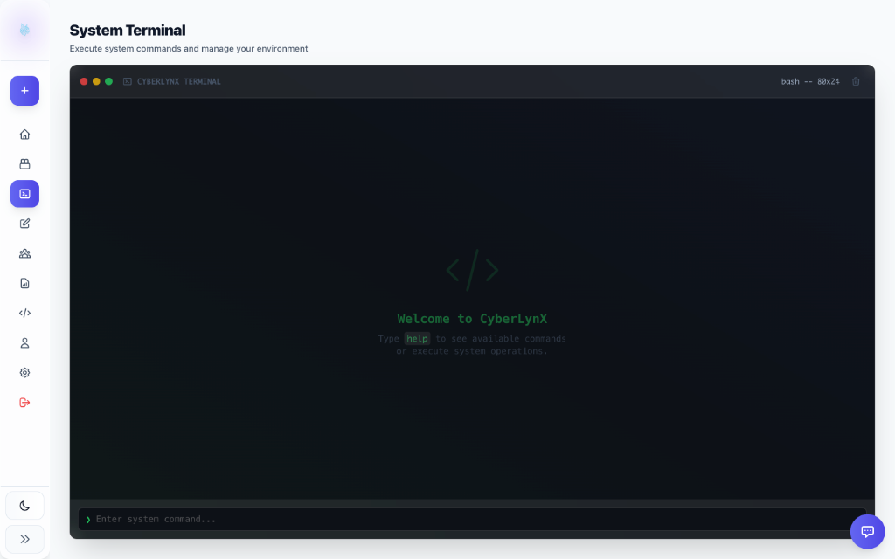
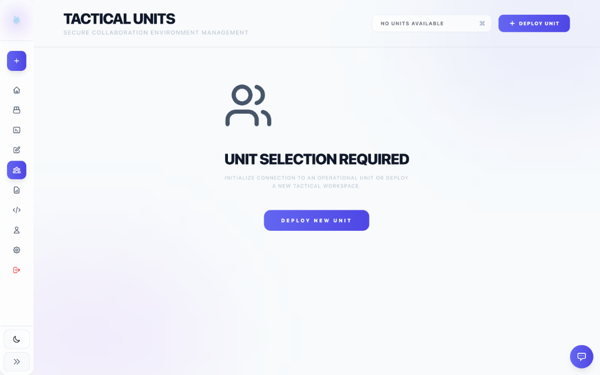

Mastering CyberLynX for Modern Pentesting
The CyberLynX platform is engineered for speed, collaboration, and high-fidelity discovery. This manual guides you through the advanced workflows required to perform comprehensive security assessments across diverse infrastructures.

Intelligence Center
Real-time operational telemetry and cross-engagement analytics.
Automation First
Offload repetitive reconnaissance to our workflow engine.
Integrated Exploitation
Go from scan to shell without leaving your browser environment.
Team Sync
Real-time asset tracking and findings sharing for professional teams.
Quick Start Dashboard
Every operation begins at the Intelligence Center. This dynamic dashboard provides a high-level view of your current engagement progress, health scores, and critical alerts.
Scans
12
Criticals
0
Targets
1
Score
98%
Automated Workflows
The Workflow Engine is where the heavy lifting happens. Instead of manually running tools, you define "Blueprints" that chain together reconnaissance, vulnerability scanning, and data parsing.
Key Capabilities:
- Visual Blueprinting: Drag and drop tools like Nmap, Subfinder, and Nuclei into a canvas to build complex logic without writing a single line of code.
- Intelligent Chaining: Automatically pass data between nodes (e.g., feeding discovered subdomains from Subfinder directly into Httpx for service probing).
- Conditional Execution: Define branch logic to trigger specialized tools only when specific conditions are met (e.g., running SQLMap only if a parameter-rich endpoint is found).

Example: Automated Subdomain & Service Discovery Blueprint
Pro Tip: Scaling Your Recon
Combine Subfinder for passive discovery with Httpx for active probing. By chaining these nodes, you can identify live web servers across thousands of subdomains in minutes, with Lynx automatically handles the deduplication and sorting of results.
Integrated Terminal (PWA)
Manual control is often necessary for advanced exploitation and environment management. The CyberLynX System Terminal provides a seamless, high-performance bridge between your browser and the target infrastructure.

Standard bash shell environment with integrated CyberLynX utilities.
Command Execution
Execute system-level commands, manage local files, and run custom pentesting scripts. The terminal supports full ANSI escape sequences, ensuring compatibility with interactive tools like top, vim, and Metasploit.
- Persistent sessions (PWA Support)
- Integrated SSH/SFTP clients
- Instant session recording for audits
Persistent Workspace
Each engagement is backed by a dedicated, persistent disk volume. Your tools, wordlists, and loot remain available across sessions and are automatically synced with your team members.
Engage Sync
"Drop a file in ~/loot and your entire team sees it in real-time."
Payload Engine
Generate obfuscated payloads, reverse shells, and custom injection strings on the fly. The Payload Engine includes a library of bypass techniques for modern WAFs and EDRs.
Tactical Units & Collaboration
CyberLynX is built for teams. The Tactical Units interface allows you to manage secure collaboration environments, deploy specialized nodes, and synchronize operational data across your entire strike team in real-time.

Secure Collaboration Environment Management.
Operational Segregation
Create isolated tactical workspaces for different client engagements. Each unit maintains its own set of tools, logs, and findings, ensuring zero data leakage between operations.
Role-Based Access
Define Commanders, Operators, and Observers. Granular permissions ensure that only authorized team members can deploy new units or export sensitive reporting data.
Automated Reporting
Professional reporting shouldn't take days. CyberLynX automatically maps findings to OWASP Top 10 and CWE frameworks, generating executive summaries and technical details in PDF, HTML, and Markdown.
-
CVSS Scoring
Industry-standard severity calculation for every finding.
-
One-Click Export
Export beautiful, client-ready reports instantly.
-
Bug Bounty Ready
Triage and export findings to HackerOne/Bugcrowd.